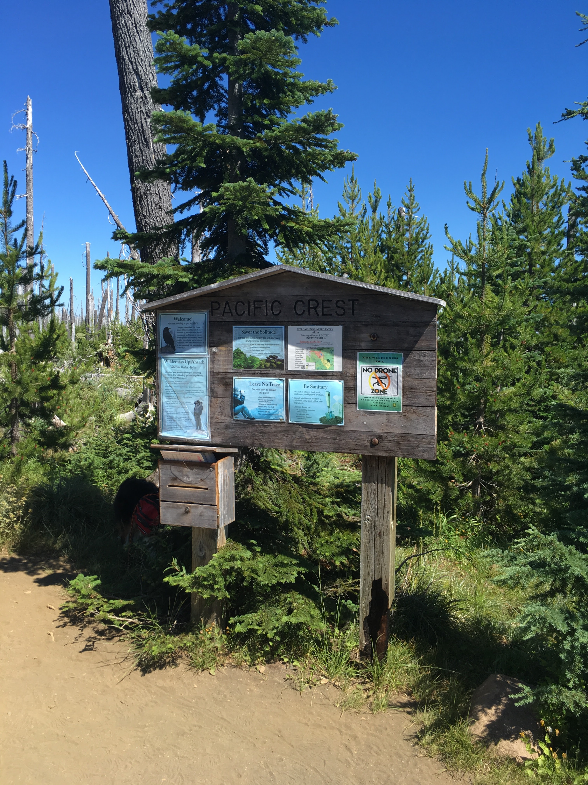

Hike to Summit Lake
We took the hike to Summit Lake which is the closets lake on the south side of Three Finger Jack. The trails follows the Pacific Crest Trail for about four miles, and then splits off for last half a mile on an unimproved trail which was a little hard for us to find. We ended up passing the turn and trail blazed to a cliff that over looks Summit Lake, but with some perseverance and back tracking we found a route to Summit Lake. Overall, the hike was a nice short trek with some spectacular views.
This is a image of Summit Lake looking southwest. The cliff we found that overlooks summit lake is to the right but out the image.
The Start
The trail head is an access point to the Pacific Crest trail off highway 20. We were thinking of bring our drone but apparently the wilderness area is a no drone fly area. The parking lot was full of horse trailers so expect to encounter horses on the trail. This trail head has the usual parking fee and wilderness pass that is on site self issue.
Fields of Lavender
To our surprise we we found fields lavender in bloom.

Old Volcanoes
The trail begins to level out where the forest of burnt trees meets with current tree line. The burnt trees allow for an awesome view of the surrounding terrain. One reason I like back-packing the Cascades, Volcanoes. They are good at blowing up and make the horizon more interesting.

Facing south the image above gives a great view of Mt. Washington and the Sisters.
The Ever Vigilant Finn
Finn the dog is always on the look out for squeaker.

This Is Why I Hike!
About four miles is a flat section that cuts across a steep side of the bottom of Three Finger Jack. A little ways up the trail from here is where the trail splits so keep your eyes peeled for trails on the right side. If your bearing after this point on the Pacific Crest becomes West you have gone to far and missed the turn. We found several different trail fragments that seem like a part of broken network of trails to the lake.
The steep slope gives the best view of the trek showing once again, Mt Washington, the Sisters, and Mt. Bachelor may be back there somewhere with Black butte on the far left. The Two lake below Black Butte in the image are Martin and Booth Lakes which are accessed by the second intersection at the beginning of the trail.

Summit Lake
After four and half miles, along with a few detours, we made it to Summit Lake. The lake was cold as expected, sadly no fish. But due to the aloofness of the trail no other hikers were there.